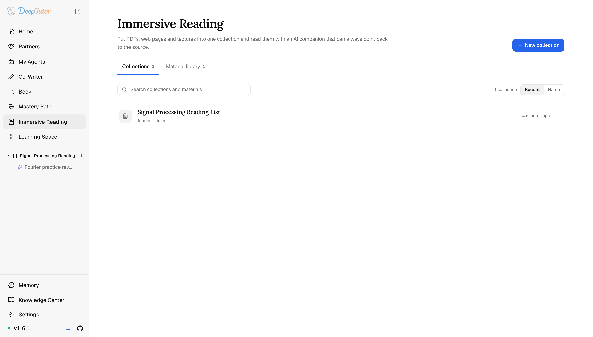
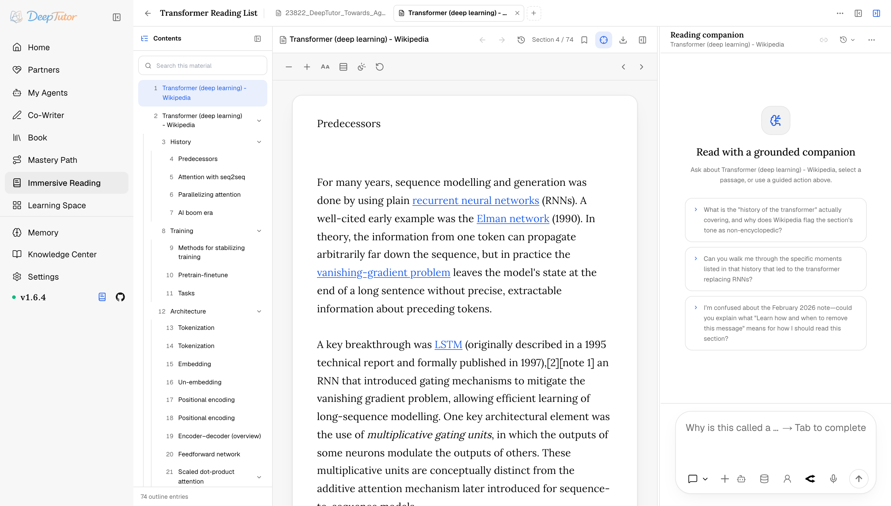

探索 DeepTutor沉浸式閱讀
AI 讀文件還能定位到原頁？DeepTutor 沉浸式閱讀實測：7 個閱讀工具+5 色高亮，200 MB 大文件照樣讀！｜零度解說
在對話旁邊讀文件——核實過的引用會跳到你看到的頁、章、投影片或小節 locator，顯式導航可高亮引文，PDF 高亮還能匯出為真正的註解。
原文連結：https://docs.deeptutor.info/zh-cn/explore/reading/
讓 AI 總結一份幾百頁的 PDF，它說得頭頭是道，你追一句「這在第幾頁」，它就開始顧左右而言他。這種尷尬，你遇到過沒有？
最近我在啃文獻，順手把 DeepTutor 的沉浸式閱讀功能完整用了一遍。
先報幾個硬數字：支援 PDF、EPUB、Word、表格、投影片、Markdown、文字與 HTML 檔案，音訊影片也行，YouTube、Bilibili 連結也能直接讀，單個文件上限 200 MB；助手內建 7 個閱讀工具；高亮標記有 5 種顏色、2 種視覺樣式。
那它憑什麼敢說回答「有依據」？引用真能跳回原文嗎？下面逐個拆。
沉浸式閱讀是什麼
沉浸式閱讀把文件和對話並排放在一起。
助手讀的就是你看到的那些單元：PDF 實體頁、EPUB 章節、投影片或抽取出來的小節，所以回答可以帶上來源定位符（locator）。
即使 N 代表章、投影片或小節，統一引用格式仍寫作 [p.N]。
只有與本回合閱讀工具結果核實一致的 locator 才會變成連結，不受支援的標記仍是普通文字；點選後會在需要時切換素材並跳到該 locator。高亮引文則是獨立的 reader_goto 操作。
它是一種能力，不是另一個應用：Chat 能做的事，在閱讀回合裡一樣能做。
在哪裡開啟
開啟左側欄的 Immersive Reading（或訪問 /reading）。
先展示合集資料庫；開啟合集，當前素材就在閱讀助手旁展開。

閱讀助手是為閱讀組裝的 Home（主頁）聊天介面：它直接複用訊息列表、輸入框、Activity 抽屜和對話大綱，不再維護獨立聊天實現。只有當前素材、選區、關聯對話與頁面提示留在 Reading。
用 New collection 一次加入一份或多份素材，也可重開已有合集。
素材顯示為標籤頁；切換時閱讀器與助手的當前來源一起切換，還能留在合集內繼續新增。
素材按使用者存放並以內容定址，所以再次加入同一來源時可以複用一份抽取結果，你之前做的標記也都還在。
網頁連結會被清理成已儲存的快照，而不是直接渲染第三方即時頁面。
重新抓取會保留不可變的舊版本（revision）；捕獲的圖片則透過驗證並檢驗 MIME（文件類型標記）的 asset 路由提供。即使來源網站之後改變，舊引用仍然可以複核。
支援的格式和上限，直接看這張表：
| 支援格式 | PDF、EPUB、Word、表格、投影片、Markdown、文字與 HTML 檔案；音訊和影片檔案；以及網頁、YouTube 或 Bilibili 連結——不含獨立圖片 |
| 體積上限 | 單個文件 200 MB |
| 原樣來源檢視 | PDF 與 EPUB 保留來源檢視；音訊影片使用播放器；其餘格式使用可重排的抽取文字 |
| 不接受 | 純圖片的掃描件。它會被明確拒絕並說明原因，而不是開啟成一個空白閱讀器——請先做 OCR（光學字元識別），或者用帶 OCR 的解析引擎把它建進知識庫。 |
和助手一起讀
文件開啟之後就可以直接問。
閱讀器與對話之間的分隔條可以拖曳，讀的時候把頁面放大，跟它較勁的時候把對話放大。

有三件事讓回答是「有依據」而不只是「有底氣」：
助手用和你一樣的方式給文件編址。 PDF 保留實體頁，EPUB 保留書脊與章節來源，簡報保留投影片，抽取格式則使用小節。每個單元都有一個 locator，每個工具都接收或回傳它，只有 PDF locator 是字面頁碼，其餘格式使用各自的來源位置。
閱讀回合保留完整的對話能力面。 聯網搜尋、程式碼執行、你的其他知識庫都還在；那七個閱讀工具是加上去的，不是替換掉的。把論文的說法和網上的說法對照一遍，是一個回合的事，不是兩個。
有沒有依據，不取決於模型願不願意去讀。 在大語言模型（LLM）開跑之前，DeepTutor 先拿你自己的問題在開啟的文件裡搜一遍，把命中的幾段直接交給這一回合。弱一些的模型在原生工具呼叫下常常一次讀取工具都不調；這樣它至少從對的來源單元開始。
這個前置檢索是一次普通搜尋，不是第二輪 LLM，它不額外花 Token（模型計數的文字單位），也不會推遲第一個字，而且因為它是確定性的，可以被測試而不是靠取樣碰運氣。
更有意思的是，這套閱讀能力配了一整套專用工具，個個都能點名：
| 工具 | 用來做什麼 |
|---|---|
| reading_list_tabs | 列出當前合集裡的素材，並標明當前標籤頁及每個來源的處理狀態。 |
| reading_switch_tab | 在助手讀取或比較另一份來源前，切換當前素材標籤頁。 |
| material_outline | 按格式編址的文件大綱，包含 PDF 書籤與 EPUB 導航或書脊標題。 |
| search_material | 在開啟的這份文件裡做全文檢索。每條命中天然帶著自己的 locator。 |
| read_material | 按 locator 完整讀取指定的若干單元。 |
| reader_goto | 把 你的 閱讀器滾到某個 locator，並在那裡高亮一段引文。 |
| reader_annotate | 以助手身份在驗證過的段落上留下高亮或註解。 |
檢索按由廉到貴分層，並會報告是哪一層命中的，好讓模型分得清逐字命中和寬鬆命中：先 exact，再 normalised（壓掉空白、忽略標點差異，所以從 PDF 裡複製出來的引文即便原文在中間換了行也能對上），最後是詞項重合度排序，避免一句自然語言提問什麼都搜不到。
大綱按結構跳轉，把你儲存的書籤列在文件大綱上方，並記住上次的 locator 或 EPUB 位置。
上一項/下一項控制元件會顯示即將進入的準確單元；抽取文字則在持久化字型與配色控制旁顯示當前字號比例和行寬。Reading 擴充只接收驗證過的可見文字或選區，受限地回傳結構化結果。
注意：即便引文沒法在那個 locator 上被核實，reader_goto 也照樣會滾過去：用中文問一篇英文論文時，模型給出的引文是翻譯過的，永遠對不上，這時候拒絕捲動只會讓閱讀器徹底失效。註解則保持嚴格：只有引文確實在那兒，標記才會被寫上去。
邊讀邊標
選中一段就能高亮或加下劃線，並可把註解附在這段引文上。
標記有五種顏色和兩種視覺樣式；閱讀器與對話之間的列表會按 locator（頁、章、投影片或小節）索引全部標記。
選中一段的同時，它也成了你下一條訊息的物件，所以「解釋一下這個」指的就是這個，不必再把原文複述一遍。
把標記帶走
從閱讀器工具欄匯出：
帶註解的 PDF ——在原檔案裡寫入真正的 PDF 註解。它在預覽、Acrobat 或 Chrome 裡開啟時高亮都在，所以你的閱讀成果離開 DeepTutor 之後依然成立。適用於保留了原始位元組的檔案，目前也就是 PDF。
Markdown ——按 locator 順序列出所有標記，每條帶上它的引文和註解。所有格式都能用，也正是你真正想黏進自己筆記裡的東西。
劃的重點直接變成標準 PDF 註解，走到哪都能用，這個匯出我是真覺得太狂了。
它在 DeepTutor 裡的位置
閱讀素材不是知識庫。 它不切塊、不做向量、不建索引。一份文件也就幾百個單元檔案，線性掃一遍是毫秒級的，而且每條命中都保留精確的來源 locator，向量庫做不到這點。
該用知識庫的時候：你想讓一個問題橫跨很多文件，或者想讓這些材料對書本、協同寫作和夥伴都保持可用。該用沉浸式閱讀的時候：你正在讀這一份文件，並希望當前頁、章、投影片或小節保持準確，PDF 還會保留真實實體頁碼。
閱讀對話歸屬於它所在的工作區。 它們在左側欄按工作區分組；重新開啟時會回到 /reading/<workspaceId>/sessions/<sessionId>，讓閱讀器、當前素材、大綱與引用繼續跟著對話，而不是落到 Home 後丟掉這些上下文。
命令列也能跑
deeptutor run immersive_reading "Summarise the method section"這個模式在命令列工具（CLI）上也能用（別名 reading 和 read），但閱讀器是一個網頁介面，CLI 回合既沒有可捲動的視口，也沒有可操作的選區。
想繼續深挖
實際效果還會受到模型、提示詞以及具體閱讀場景的影響，建議大家結合自己的需求實際體驗評估。